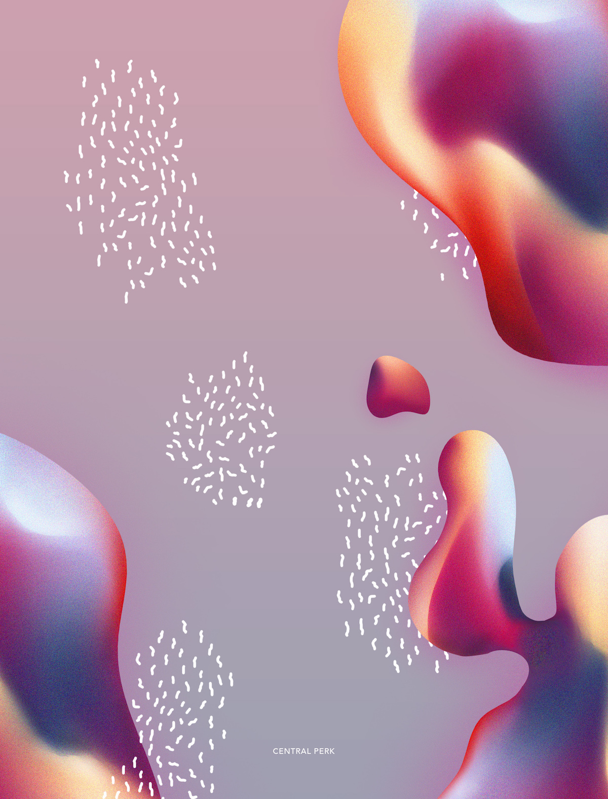
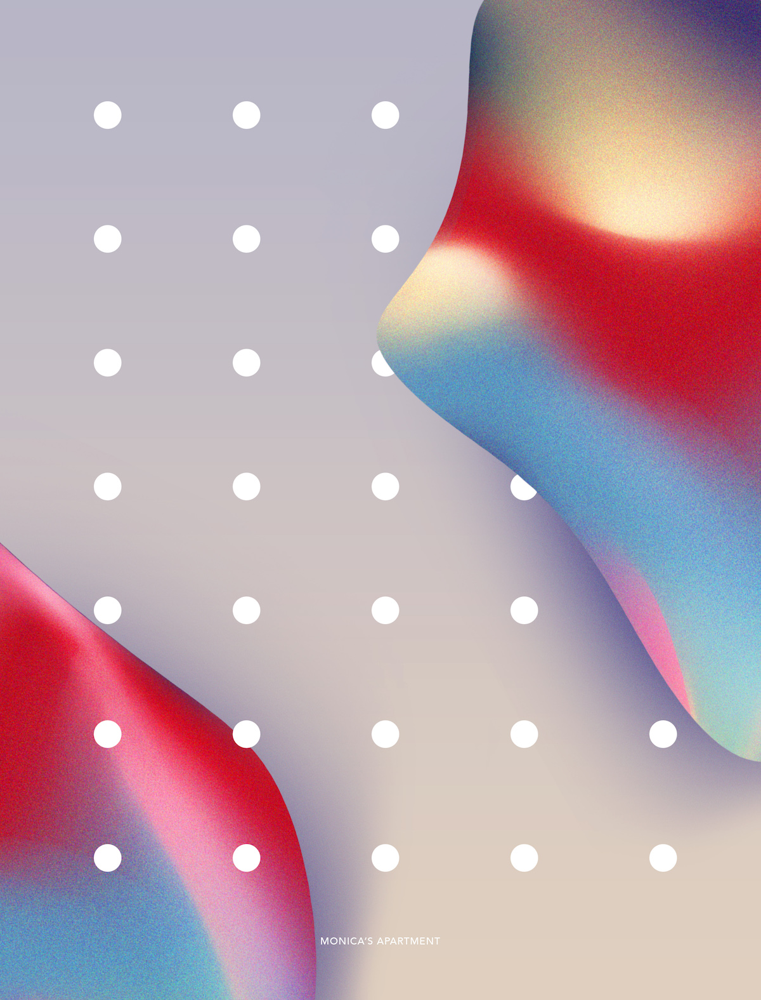
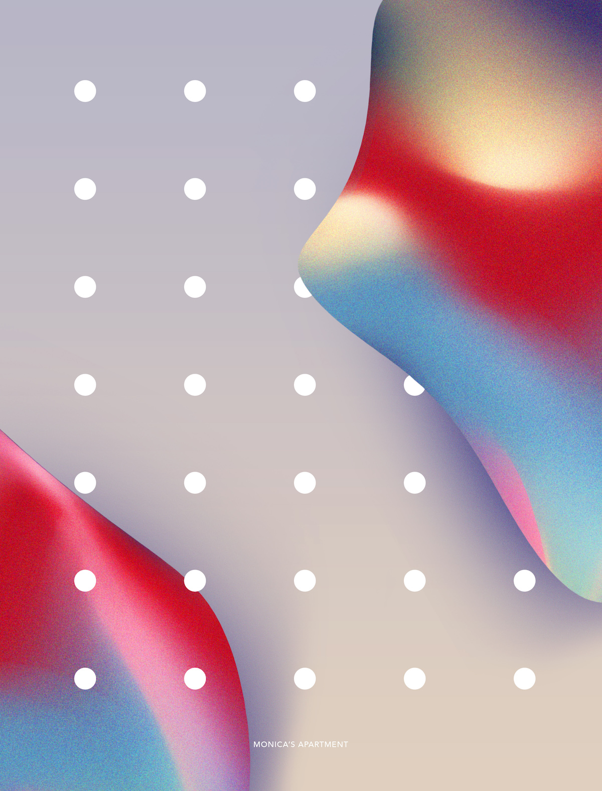
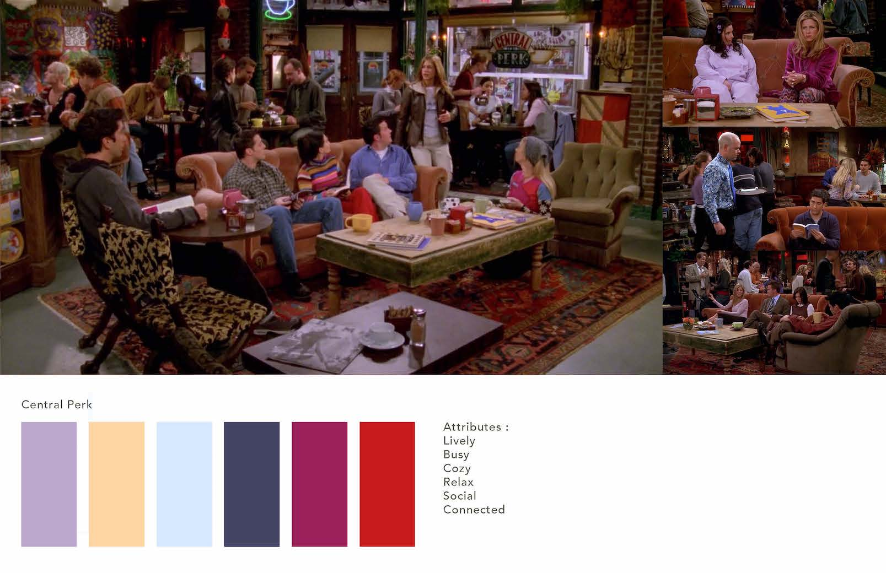
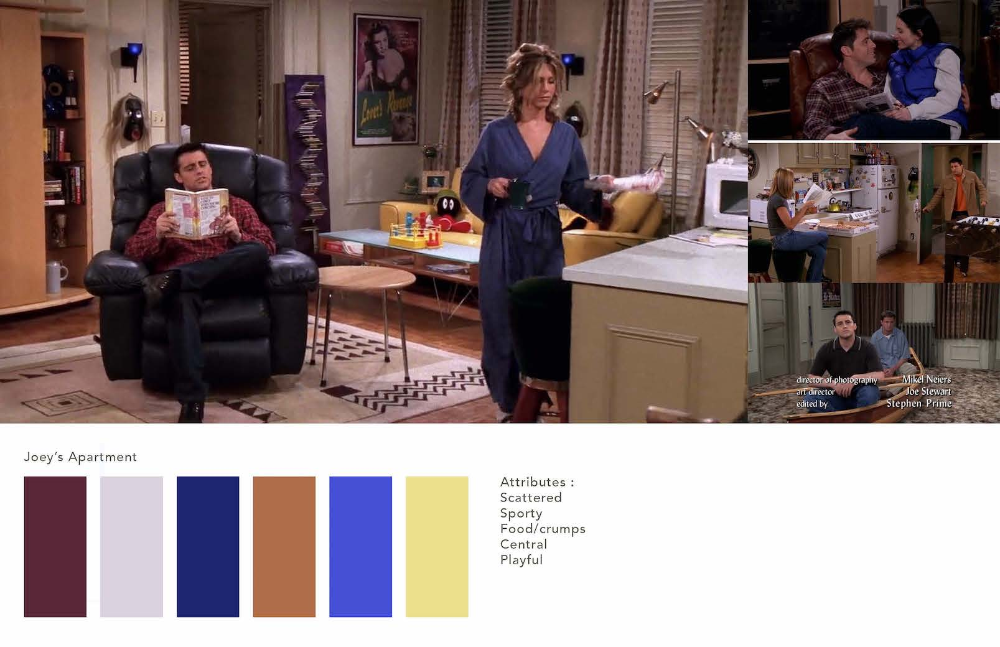

FRIENDS
For this Design Studio project, I took one of my favorite TV shows of all time, FRIENDS, and visually represent it in a new way. The objective of this project is to tell a familiar story in a new way, while still keeping the essence of the original narrative. I picked out the three sets that stay with the show through out all ten seasons: Monica's apartment, Joey's apartment, and Central Perk.
Deliverables
 

Design Study
The colors of the posters correspond to the colors of the sets, with design elements taken from the attributes of each location.
 